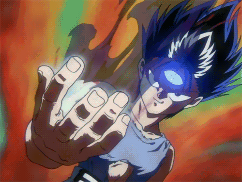

Historia de Hiei
Hiei es un demonio híbrido de fuego y de hielo (Yōkai). Él tiene algunas habilidades como la pyrokinesis y la cryokinesis: que le conceden resistencia asombrosa a las temperaturas extremas tanto del calor como del frío, así también una inmunidad limitada contra el fuego y los ataques basados en hielo. Él posee un tercer ojo implantado en el medio de su frente, llamado Jagan (literalmente ojo malvado), que amplifica todos sus poderes naturales y le permite convocar los fuegos Hellacious (Demonios Infernales) de su lugar de origen, Makai (mundo del mal). El “Ja-gan” se traduce al “Mal-ojo”, que es el término usado en el manga inglés. El ojo malvado de Hiei no solo amplifica sus poderes, también le da otras capacidades, ejemplo de esto es la Hipnosis (especialmente en seres humanos), la Telepatía, y poderes que le permiten ver más allá de lo evidente. Él lo oculta detrás de una venda especial de Sutra, la misma clase de venda que él utiliza para envolver el dragón negro en su brazo derecho. La venda lo fuerza “para dormir” y para disminuir su gen de yōkai del fuego, pero es necesario ser revelado siempre que él necesite utilizarlo.
Hiei nació como un Imiko ("niño maldito"), por nacer de una kōrime ("doncella de hielo"), una raza totalmente femenina y que solo puede concebir varones si mantienen relación con otro ser (generalmente conciben por si mismas). El nombre de su madre era Hina. Se sabe que el padre de Hiei era un demonio de fuego y que se relacionó con ella fuera del castillo aislado de las korime. Las kōrime tenían prohibido todo contacto con el mundo exterior y tampoco podían concebir un hijo con un hombre, que en determinado caso, el bebé nacerá siendo varón que según su creencia, acabaría trayendo la desgracia y la deshonra a la tribu. Al haber roto las reglas de la tribu, Hina tuvo que tomar una dura decisión: matar a su hijo. A pesar de que era solamente un bebé, Hiei era consciente de todo y como Hina no pudo llevar a cabo la orden de eliminarlo, su amiga Rui toma entonces la tarea de lanzarlo de la isla flotante hacia su muerte. Después de sobrevivir a su caída a la superficie del Makai, fue encontrado y criado por una pandilla de bandidos, pero no duró mucho. Después de darse cuenta del valor de la piedra de lágrima derramada por su madre en su nacimiento, decidió llevarla a la vista de todo el mundo, con la esperanza de atraer a enemigos poderosos. A la temprana edad de cinco años, antes de su adquisición del Jagan, Hiei había alcanzado a desarrollar el youki de un Clase A (según Mukuro). A medida que crecía, mataba a todos sus enemigos, haciendo de los sobrevivientes sus enemigos jurados. Después de ser rechazado por sus compañeros debido a su actitud, siguió usando su piedra a la vista. Esa piedra era lo único que lo relejaba y mantenía confortado, pero en un descuido durante un combate, perdió su tesoro y se comprometió a encontrarlo, considerando que su ego fue el responsable de su perdida. Más tarde, Hiei recibió el implante Jagan de Shigure, el quiropráctico del Makai, a cambio de una parte de su vida, en su caso, tiene prohibido decirle a Yukina que es su hermano. Pese a las advertencias de que el implante podría drenar su energía y pasarlo de ser un clase A un clase D, Hiei decidió seguir adelante con la operación, poniendo en juego su propia vida. Posteriormente Shigure lo entrenaría personalmente en la esgrima. Luego usó su recién adquirido Jagan para encontrar el reino de las Korime y ejecutar su venganza, aunque su principal objetivo era encontrar la lágrima perdida. Cuando llega a su lugar de nacimiento, Hiei se arrepiente de sus intenciones de venganza, ya que descubre (frente a la tumba de su madre) que esas mujeres ya estaban muertas, dado que debían mantener sus corazones congelados para sobrevivir. Aunque en el manga no se ven imágenes de lo sucedido en el reino de la Korime, se entiende que Rui, la amiga de su madre, le contó los motivos de su suicidio y le habló de la existencia de su hermana, Yukina. También supo que Yukina salió del reino para buscar a su hermano. Finalmente Hiei se niega a matar a Rui, quien asumía que el debía matarla, por lanzarlo desde el reino y causar una gran depresión en Hina (madre de Hiei).